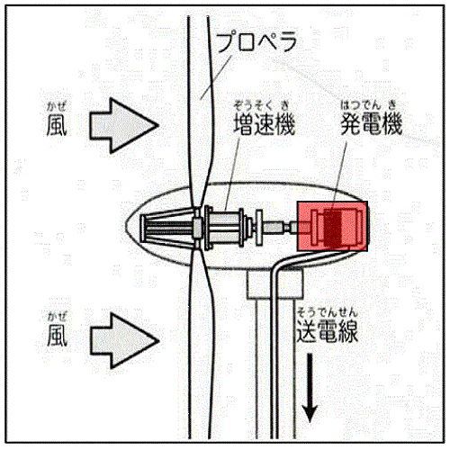

「プロペラ」の部分に風が当たると、プロペラが回転し、その回転が動力伝達軸を通じて「増速機」に伝わります。増速機は、ギアを使って回転数を増やし、回転速度を速めます。その回転を「発電機」で電気に変換しているのです。 発電された電気はトランス（変圧器）で昇圧され、送電線を通って届けられます。

風力発電概略図
| 種 類 | 概 要 |
|---|---|
| プロペラ型風車 | 風力発電においてもっとも多く用いられているタイプです。発電効率が良く大型化が可能なので、大きな電力の発電も可能です。三枚羽のものが多く、白い外見が一般的です。 |
| サボニウス型風車 | 筒型の形状で上から見たときに渦巻きのような羽根を持った、小規模発電向きのタイプです。全体的に発電効率はそんなに良くないのですが、設置場所を選ばず、強風時の音も静かなので街中などに設置するには適しています。 |
| ダリウス型風車 | 小規模発電向き。垂直形状の風車で、「泡だて器」に似た形状です。建設するためのコストが低く、さらに風の向きを選ばず、強風の時でも騒音をあまり出さずに回るので都市部などでの発電に向いています。 |
| オランダ型風車 | 十字型が特徴的な、オランダにて伝統的に使われてきた形状です。昔からヨーロッパを始めとして粉引き、揚げ水などに利用されてきた風車です。 |
風力発電にはこれら以外にも、ジャイロミル形風車、セルフウィング形風車、バドル形風車などの種類があります。
○風力発電は、一定の風速があれば、昼夜を問わず電力を生み出してくれます。
○火力発電や原子力発電のように、燃料を必要としないので、排気ガスやCO2、燃えかす、使用済み燃料の処理なども発生しません。
○エネルギー変換効率が風のエネルギーの25～40%を有効に利用可能と良好であります。
○風が吹かないとき、風が弱すぎるとき、そして台風などの風が強すぎて危険なときには、発電することができないため、電力を一定量供給するという「安定性」の面では弱い部分があります。
○風力発電の課題のひとつに騒音対策・低周波対策があります。